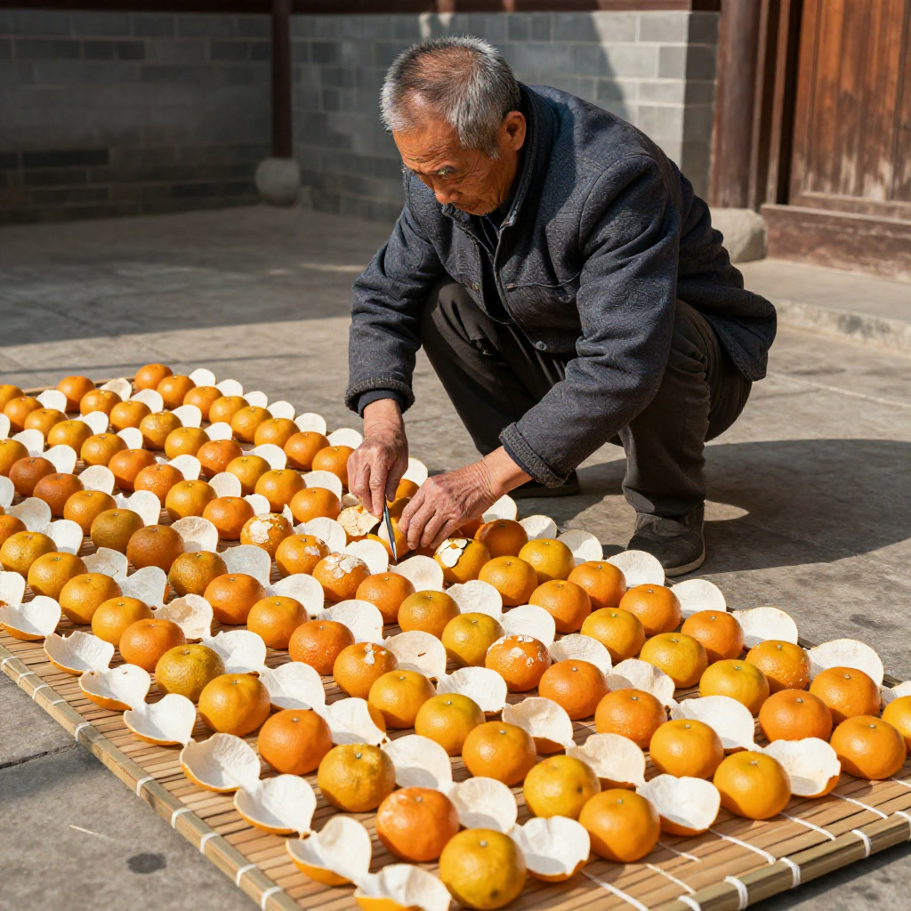
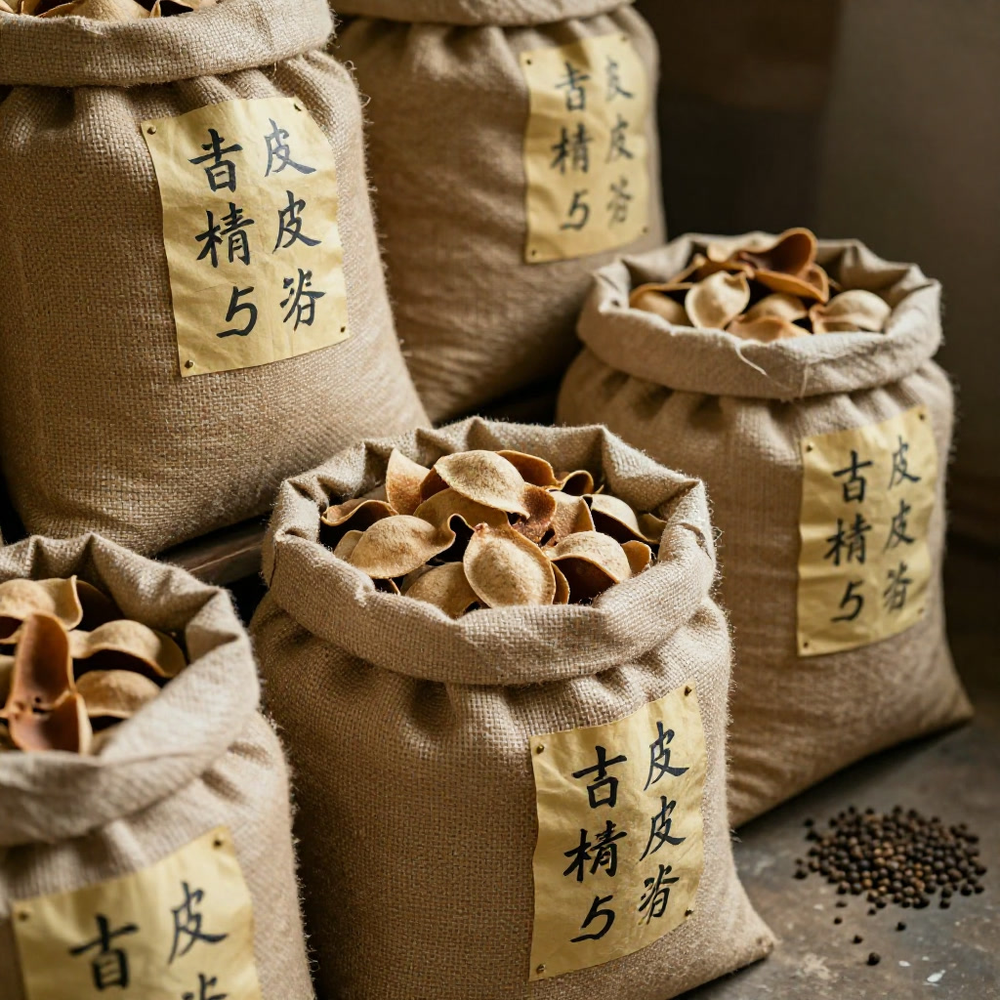
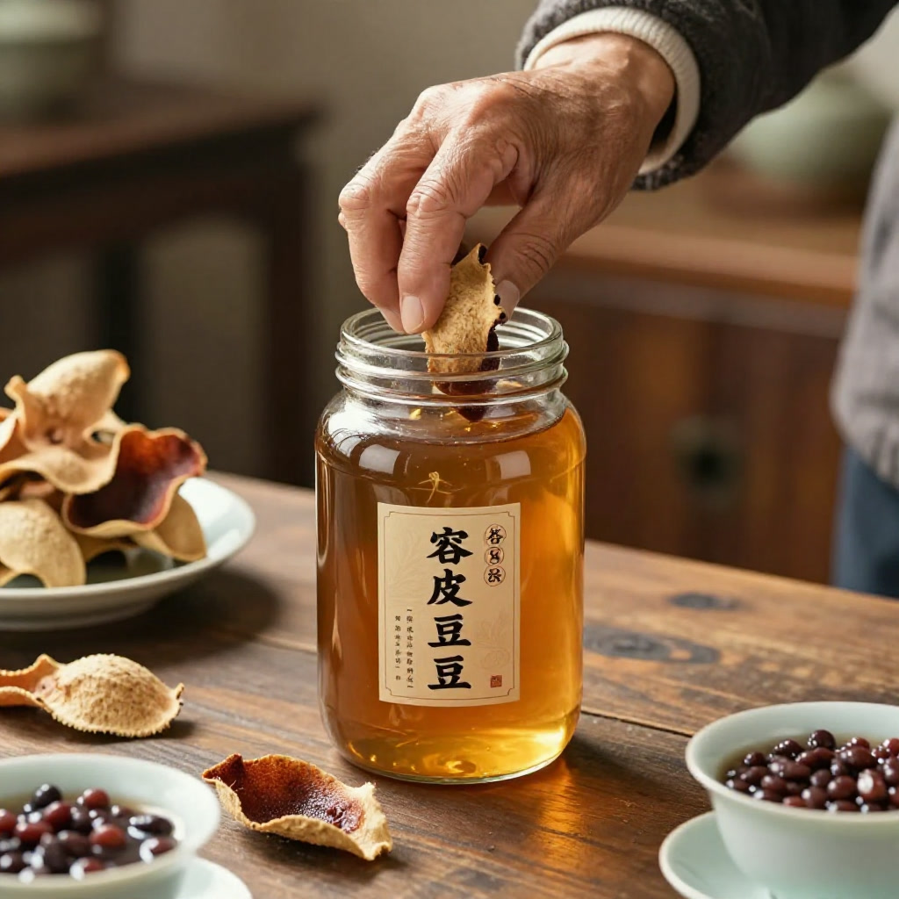

# 一塊陳皮背後的230億，爺爺教我嘅儲存智慧
**資料説明｜故事化敍事、非真實採訪逐字稿**
本文以家族記憶為靈感作故事化重構，對話及部分場景屬敍事表達，唔系真實採訪原話；年份、價格、行情、食療描述為故事背景及資訊參考，唔構成投資、醫療或者收藏建議。
九月中旬，新會的天色終於涼下來。
清晨六點半，會城老城區嘅小巷仲未醒透，我推開阿爺留俾我嗰間老屋嘅木門，聞到一股熟悉嘅味道——麻袋裝嘅舊皮，混住少少柑香，再帶住十年陳化先有嘅沉鬱藥香。阿爺走咗三年喇，但系佢留低嗰幾十斤陳皮仲喺度等我。
「盈盈，你睇下，今日報紙講，新會陳皮全產業鏈產值今年預計突破230億。」爸爸遞過一份《江門日報》，手指指住頭版。
我接過報紙，望住嗰個數字，望住窗外透入嚟嘅晨光，腦海浮現嘅唔系產值、唔系產業園，而系阿爺七十幾年嚟日復一日做嘅嗰件事：翻皮、曬皮、入袋、檢查、再曬。看似簡單，其實每一個動作都系對時間嘅敬畏。
阿爺嘅規矩，系對一塊皮嘅承諾
阿爺系新會三江鎮土生土長嘅果農。我細個嗰陣，每到十月柑紅，屋企天井就會鋪滿金黃色嘅柑皮。太陽出嚟嘅時候，阿爺會蹲喺皮邊，用手指輕輕翻動每一片皮。「朝抖三，晚掃七」，佢成日掛喺嘴邊——朝早抖皮三次，傍晚掃走落葉雜質七次。
我問過佢，點解要咁講究？
阿爺指住一片剛反開嘅皮：「你睇下，白囊向外，定要均勻，厚薄一致，冇一處留白。先至可以叫做『三刀開皮』嘅正宗新會皮。刀工唔好，留白厚薄不均，曬出嚟嘅皮就會一邊硬一邊軟，陳化唔到位，十年後都仲系廢皮。」

嗰陣我仲細，只系覺得阿爺囉嗦。直至佢走嗰日，我執拾佢嘅倉，先發現——每一袋皮上面都掛住一張紙牌，標住日期、產地、樹齡、甚至果園嗰邊嗰棵樹。有啲紙牌已經發黃，但系墨水仲清晰可見。佢用咗六十年時間，記錄咗每一批皮嘅前世今生。
呢啲紙牌，比230億呢個數字重得多。
230億背後，系千千萬萬個「阿爺」
爸爸指住報紙入面一段話：「全區新會柑種植面積超14萬畝，帶動超7萬人就業，人均增收超2.2萬元。」
我望住呢段文字，突然明白——230億唔系冷冰冰嘅數字。佢系我阿爺嗰種六十年如一日嘅堅持，系三江、雙水、古井、會城每一位果農喺烈日下翻皮嘅汗，系每一個倉入面掛住嘅紙牌，系每一個標住「新會種（zhǒng）、新會種（zhòng）、新會陳」嘅身份證。
呢兩年，新會區搞咗一個好嘢——「新會陳皮數碼化溯源管理系統」。每塊皮可以追溯到果園地塊、種植户、採摘時間、初加工日期，就連陳化倉都有編碼。更犀利嘅系，政府用咗「太赫茲光譜技術」做陳皮產地同年份鑑定。
阿爺嗰個年代，要靠經驗、要靠眼、要靠舌——色澤、油室、香氣、味道，每個老師傅都系行走的鑑定儀。而而家，後生一輩可以用科技守住呢份道地性。
但系我成日諗：科技守住嘅，系皮嘅身份；守住皮嘅靈魂嘅，仲系人。

收藏陳皮嘅智慧，唔系「愈舊愈值錢」咁簡單
好多人以為，陳皮放得愈耐就愈值錢。錯。
港九中醫師公會首席理事長何國偉講過一句好關鍵嘅話：陳皮需要時間「陳化」，先可以去除內部嘅刺激物。陳化唔等於「擺住唔理」——如果儲存唔啱，放一百年都系廢皮，甚至變成有害嘅「黴皮」。
阿爺教過我四個字：「透氣、避光、防潮、定期翻曬」。
第一，容器嘅選擇。阿爺從來唔用膠袋。佢話膠袋密封不透氣，皮入面嘅水汽出唔到，就會發黴、變味、甚至生蟲。佢用嘅系新會本地嘅麻袋，或者粗布袋，透氣但唔透水。如果住喺潮濕嘅南方沿海，最好內層加一個透氣紙盒或者玻璃罐，但系玻璃罐唔可以完全密封，要留少少透氣嘅空間——呢個系好多人忽略嘅細節。
第二，環境嘅温濕度。理想温度系20至30度，最忌忽冷忽熱。南方春夏潮濕，最好開抽濕機控制濕度喺60%至65%；北方秋冬乾燥，皮容易「縮」、油室收緊，香氣揮發唔到，影響後續陳化。阿爺有個土方法：秋冬季會喺倉房角落放一盆清水，增加少少濕度。
第三，避光同防蟲。陳皮入面有糖分，系蟲嘅最愛。強光會令油室揮發，香氣流失。所以陳皮要放喺陰涼、避光、通風嘅位置。阿爺嘅倉從來唔開大窗，只留細窗通風，又會喺皮袋旁邊放幾粒花椒——天然驅蟲，唔使化學藥劑。
第四，定期「翻曬」。每年農曆六月（廣東最潮濕嘅月份）過後、九月秋高氣爽嘅時節，要將陳皮攤開喺太陽底下曬兩三個鍾，稱為「翻曬」。但系切忌烈日暴曬——「朝早十點前、下午四點後」嘅陽光最温和。阿爺有句口訣：「皮曬出油，香氣更稠；曬過龍，皮變炭。」意思系曬到皮表面微微出油就夠，唔好曬到焦黑。
一個老茶客嘅故事
講個真實故事。
我識咗一位香港老茶客，姓陳，做咗四十年中藥材行。佢屋企有一罐1983年嘅新會陳皮，金黃色帶琥珀光澤，香氣一打開就飄成間屋。佢講過，當年佢用800蚊港紙（一個普通工人兩個月糧）買咗三斤新會皮，而家市值最少值二十萬。
但系佢最得意嘅唔系值錢，而系每年冬至，佢都用呢罐皮煲一碗陳皮紅豆沙，俾佢啲孫仔孫女飲。孫女大學畢業嗰年，佢寫咗張卡片：「呢罐皮陪咗爺爺四十年，希望陪你哋四十年。」

我聽到呢度，眼濕濕。
陳皮嘅價值，唔止系金錢，仲系時間、系傳承、系一個家族嘅記憶。
秋冬系收藏嘅季節，亦系飲皮嘅季節
而家九月，秋風起，廣東人開始「秋燥養生」。陳皮配什麼最好？
第一，陳皮白粥。新會人早餐最樸素亦最養生嘅食法——白粥煲好，熄火前三分鐘放一小塊三年以上嘅陳皮，焗一焗。入口綿滑，帶少少苦底回甘，暖胃又潤燥。
第二，陳皮普洱。熟普暖胃，陳皮理氣，兩者加埋系秋冬絕配。用五年陳皮配十年熟普，先用滾水温壺，再放皮同茶，注水洗茶一次，第二泡開始飲。香氣從柑香到藥香到木香，層層遞進。
第三，陳皮燉雪梨。秋冬乾燥咳嗽，雪梨切頂做蓋，挖芯放入一塊陳皮、少少冰糖、幾粒川貝，燉兩個鍾。飲完喉嚨潤曬，系廣東阿媽嘅秋冬恩物。
但系記住，新皮（一年內）燥性重、入藥唔適合，只適合入菜做香料。陳化至少三年先可以入藥用，呢個系《中國藥典》嘅規定。
守住道地，先至守住根
230億嘅產業背後，最怕嘅系「以假亂真」、「以次充好」。新會區政府近年做咗好多功夫——地理標誌用標量1400萬件位列全省第一、商標品牌有效註冊量2160件、成立行業協會商標品牌培育指導站、辦「護航」、「清源」等專項行動。
但系，作為普通消費者，我哋可以點自保？
第一，認準地理標誌。包裝上有「新會陳皮」四個字加地理標誌專用標誌，先至系道地貨。
第二，睇皮形、聞香氣、嘗味道。正宗新會皮三瓣齊整，厚薄均勻，油室密集。香氣帶有「陳香」而非「酸香」或者「黴味」。入口甘甜回甘，唔會有苦澀鎖喉嘅感覺。
第三，問來源、看年份。正宗新會陳皮會標示產地、採摘年份、加工方式。唔好貪平買來歷不明嘅「十年陳皮」、「二十年陳皮」——市場上好大一部分系外地皮充新會皮，或者新皮做舊嘅「工藝皮」。
結語：時間系最貴嘅成本
阿爺嗰間老屋，我而家仲保留住。麻袋入面嘅陳皮，我每年都會翻曬、整理、記錄。我用佢教我嘅方法，守住佢留俾我嘅呢份家業。
有日我孫女（如果有嘅話）問我：「嫲嫲，點解你每年都要曬嗰啲皮？」
我會話：「因為時間太貴，唔可以辜負。」
新會陳皮之所以珍貴，唔系因為230億呢個數字。系因為每一塊皮背後，都有一個阿爺、一段時間、一份堅持。
你今日飲咗陳皮未？
使用提示
本文只作一般資料整理，不構成食品安全、營養、收藏投資或者醫療建議。選購、保存或者食用陳皮，應向正規渠道及有關主管部門核實。如有身體不適或者正在接受治療，請諮詢合資格專業人士。唔好將陳皮當成治療方案。
常見問題
Q1：陳皮系咪放得愈耐就愈值錢？
唔系。文中提到儲存唔啱放一百年都系廢皮甚至變黴皮，年份只系其中一項資料，仲要睇產地、品種、加工同保存，唔好只按年份判斷。
Q2：屋企存皮點樣先唔發黴？
記住透氣、避光、防潮、定期翻曬：唔用膠袋密封，保持20至30度、濕度約60%至65%、陰涼避光通風，每年秋高氣爽時適時翻曬。具體存法以產品標示同正規渠道指引為準。
Q3：點樣自保唔買到假皮？
認準地理標誌專用標誌，睇皮形聞香氣嘗味道，問清產地採摘年份加工方式，唔貪平買來歷不明的高年份皮。
Q4：新皮可唔可以直接入藥？
唔可以。文中提到陳化至少三年先可以入藥用，呢個系《中國藥典》嘅規定，一年內新皮只適合入菜做香料。
Q5：文中阿爺同老茶客嘅故事系真實採訪嗎？
唔系。本文以家族記憶為靈感作故事化重構，對話及部分場景屬敍事表達，唔構成投資、醫療或者收藏建議。
來源
1. 本文為原創故事，產業背景綜合公開行業報道轉述，具體以官方最新資料為準。 2. 新會陳皮選購、保存的一般方法，以產品標示、正規渠道及有關主管部門指引為準。
（本文為滢滢姐講陳皮故事原創，轉載請聯繫作者）